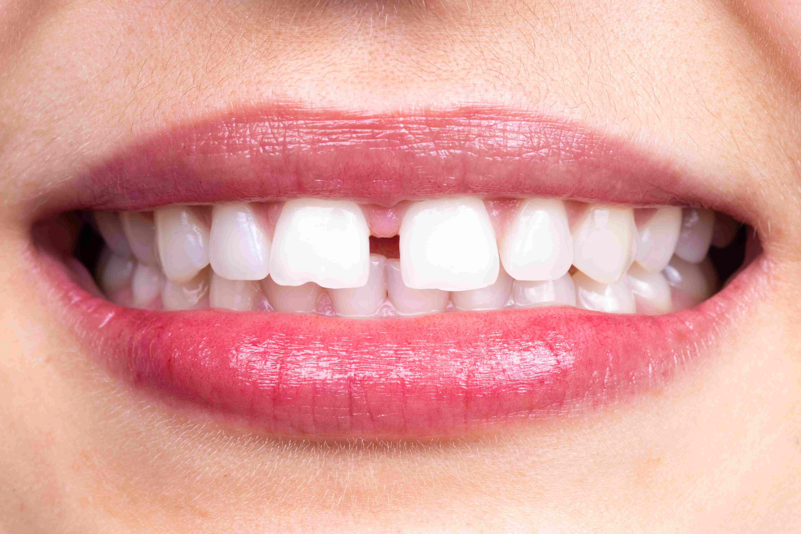
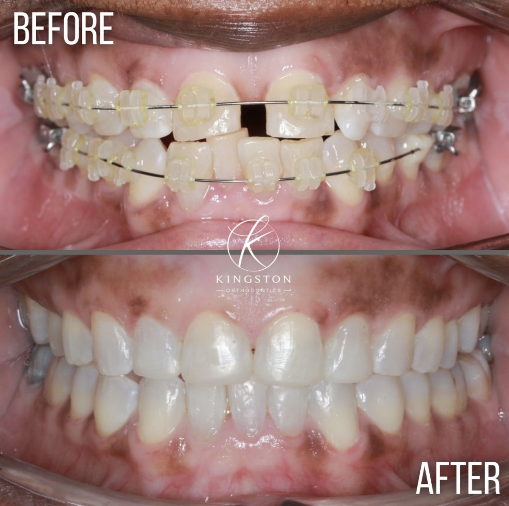

Spacing
Diastema refers to a gap or space that occurs between two teeth. It is most commonly used to describe an open space between the upper incisors, which are the front teeth. This gap can occur naturally or due to other dental factors.
Cause
Diastema occurs when there is an imbalance between the size of the teeth and the jaw. It can sometimes be caused or worsened by the action of the labial frenulum (the tissue that connects the lip to the gum), tongue thrusting, or the spreading of teeth due to periodontal diseases.
Treatment
There are two options for treating diastema (spacing between the teeth):
The first option involves orthodontically moving the teeth using braces, which typically requires 10-12 months for correction.
The second option involves the placement of porcelain veneers or metal-free crowns. Porcelain veneers are thin, eggshell-like pieces of porcelain applied directly over the tooth structure after some initial preparation. Once the porcelain veneers are fused to the underlying tooth structure, they can restore the appearance of straight teeth and close gaps without the need for braces. Additionally, the color, shape, and size of the teeth can be customized to the patient's preference for overall smile enhancement. The greatest advantage of porcelain veneers is that the treatment can be completed in just two painless visits.
FAQ's
How to close gaps between the teeth?
Gaps between the teeth can be closed either by pulling the teeth together with braces orthodontically, or cosmetically by placing porcelain laminates, lumineers, or metal-free crowns. If spacing is the only issue, either of these options is suitable. However, if teeth are malformed or missing, resulting in gaps, cosmetic correction is usually a more viable option.
What is cosmetic treatment or Smile designing?
It is an artistic method used to align your teeth and enhance your smile. In this process, the crowns are designed to close the gaps between the teeth. Laminates and Lumineers are relatively non-invasive methods to achieve gap closure while also changing the color and shape of the teeth, especially when the teeth are perfectly aligned.
What is the investment required in terms of time?
Orthodontic correction of the teeth takes 7-8 months, while cosmetic correction can be achieved within 7-10 days.
What are the costs involved?
The cost depends on the type and quality of materials used. For more detailed information, you can visit the treatment charges section and the crowns/dental laminates section.
Is the procedure painful?
There is no pain during or after the procedure as we numb the tissues and teeth. Additionally, you will leave the dental clinic with temporary crowns, so there is no need to worry about pain during or after the procedure.
Will the new teeth look natural?
All cosmetic treatments use CAD CAM technology and metal-free materials (such as porcelain or zirconia), which ensure precise fit and translucency for a natural appearance.
Can any nearest dentist do the procedure?
Cosmetic dentistry requires extensive knowledge of aesthetic principles, a keen eye for beauty, and experience working with superior materials such as rubber base, light body, and bonding cements. Expertise in the methodical sequencing of treatments is crucial to minimize the number of visits and provide the best aesthetic results without compromising the integrity of the tooth. Thus, a dentist with a Master’s degree and considerable experience is always recommended.
Is it a permanent treatment?
Yes, the crowns or laminates are permanently bonded to the teeth, ensuring lasting results.